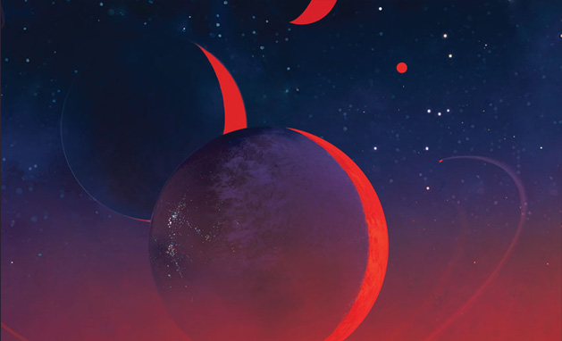
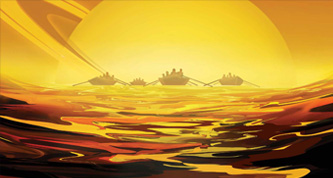
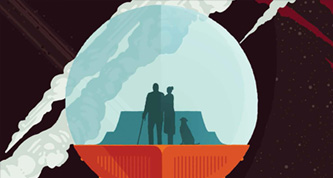

EXPERIENCE THE CHARM OF GRAVITY ASSISTS
NASA's Voyager mission took advantage of a once-every-175-year alignment of the outer planets for a grand tour of the solar system. The twin spacecraft revealed details about Jupiter, Saturn, Uranus and Neptune – using each planet's gravity to send them on to the next destination. Voyager set the stage for such ambitious orbiter missions as Galileo to Jupiter and Cassini to Saturn. Today both Voyager spacecraft continue to return valuable science from the far reaches of our solar system.
Since the Grand Tour is the route the Voyager spacecraft took to visit all four outer planets. NASA/JPL imagined this would be something people might want to repeat. It's a flight plan that's possible when the outer planets are arranged just right. In another 175 years, it might be considered "quaint" to experience that same gravity assist to carry new voyagers onwards.
VISIONS OF THE FUTURE

Imagination is our window into the future. NASA/JPL strives to be bold in advancing the edge of possibility so that someday, with the help of new generations of innovators and explorers, these visions of the future can become a reality.
GALACTIC TRAVIL DESTINATIONS

As you look through these images of imaginative travel destinations, remember that you can be an architect of the future.